What's the Sphinx contract? After ten years of using it, I am still unable to get autoapi, autodoc, autosummary to do what I want. Also, folks around me are dropping PDF builds because LaTeX errors are insane.
Sphinx doesn't need a rewrite, it needs a rethink.
Replying to @remoquete
Science needs a lot of everything: more funding, fewer greedy journals like Nature, burning the current incentive structure to the ground...
Then at some point, more research technical writers and software engineers!
Replying to @pradyunsg and @paulweveritt
Sourceforge is not only outdated: it is crap. I don't even know where the emails I send to the various mailing lists end up. It's buggy and terrible.
And yet, no one has dared in all this time to make a fork on a sane platform, with continuous integration etc.
Replying to @DanWos
https://twitter.com/juanluisback/status/1531984781948379138
Replying to @sgomez and @david_bonilla
+100!
Replying to @brainwane, @choldgraf, @cbrnr_ and @pradyunsg
I have suggested @codeberg_org many times: nice UI, hosted by a German non-profit. Options abound.
As @pradyunsg says, the maintainers have not been clear on what the problems are lately.
Replying to @choldgraf, @brainwane, @cbrnr_, @pradyunsg and @codeberg_org
💯
New stuff from @orchestofficial, check it out! 👀 https://twitter.com/orchestofficial/status/1532046425915174912
Replying to @vkmc and @PyConES
https://twitter.com/whataweekhuh/status/1531951691595100161
RT @PyDataMadrid: Ya está abierto el registro para nuestra reunión de junio: ⚙️ MLOps, creando equipos de datos desde cero, ¡y más!
https:…
Replying to @ramiroaznar and @dersteppen
En caso de duda, mejor ir en persona, no vaya a ser que no se grabe 😉
Replying to @ramiroaznar and @dersteppen
Para nuestra audiencia internacional seguiremos informando :)
Replying to @Jimena_y_yo and @opground
🍿 https://youtu.be/p7CW_stLGHQ 😄
Without these books, some of which are expensive and difficult to find, I would have never been able to write @poliastro_py. Science and engineering knowledge is still kept in these, and I really hope we can change that someday. In the meantime, I feel grateful and privileged ♥️
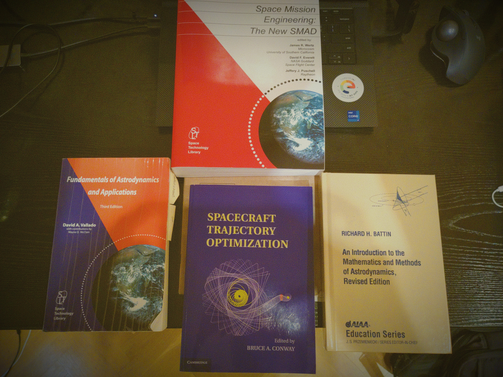
Replying to @jeremychone
Thanks a lot! 🙌🏼 Weighing ideas for Part 4, suggestions? 😁
Replying to @willmcgugan
Aiuto, soccorso @pyconit
I placed a LaTeX figure where I wanted, it worked the first time, and the end result is much better. Please give me a round of applause. #phdchat
Replying to @whereisbasia and @pyconit
First time I tried that when living in Milan in 2012, the waiter stared at me and told me:
"No."
Never again😅
😭😭😭😭 https://twitter.com/poliastro_py/status/1533437965770317828
Replying to @newlawrence
That's *impossible*
Replying to @jacobian, @patrick91 and @webology
Did you end up using stickerit? I was considering Sticker Yeti as well
Replying to @cartazio, @esc___ and @poliastro_py
SMAD for the engineering side of things, Vallado for an accessible reference of algorithms, Conway for continuous thrust dynamical optimization, Battin for beautiful and rigorous mathematical derivations
RT @tacaswell: Also, to quote myself:
> There is nothing wrong with using a GUI for working with git nor is the CLI “morally superior” – a…
RT @AeroSciengineer: (1/2) "Growing up in Columbia, I could not have done a PhD at CU Boulder if arXiv hadn't existed"
One of the pioneers…
RT @PyDataMadrid: ¿Ya te has apuntado a nuestra reunión de junio? MLOps, gestión de equipos, visualización interactiva, networking, y una s…
Replying to @thelinuxEXP and @e_mydata
I'm a happy user of @e_mydata on @Fairphone, I finally found a platform I like and I don't think I'm ever going back. Release 1.0 was out last week with crucial improvements.
However, for me the "100 % usable" mark will be reached when this is fixed https://gitlab.e.foundation/e/backlog/-/issues/2732
Replying to @dstufft
Everybody underestimates how hard is to write docs that are actually good and comprehensive.
RT @AsahiLinux: First triangle ever rendered on an M1 Mac with a fully open source driver! 🎉🎉🎉🎉
Replying to @bernhardsson
We observed the same thing with @RickLamers the other day, crazy times
Replying to @david_bonilla, @ProtheanTom and @gorkaotxoa
Leer https://twitter.com/ProtheanTom/status/1534293757260177409
Replying to @david_bonilla, @ProtheanTom and @gorkaotxoa
Vueltas y más vueltas para no entrar al meollo de la questión: que parecía que las gasolineras iban a cerrar y se han forrado. Que sí, que la noticia habla de ingresos y no beneficios, pero con un 70 % extra de facturación, parece que se defienden solas sin tu ayuda.
Replying to @gamusino
Celebro que hayas planteado este debate de manera tan suave y empática. Pero como puedes ver, la gente no lee lo que va dentro de los paréntesis. No te gastes, vamos justitos de comprensión lectora. Todos en SUV a Ciudad Universitaria, claro que sí. Deseando que pongan helipuerto
Replying to @delawen
¿Quedó grabada? Me encantaría escuchar qué se habló sobre esta diapositiva. Ya es la segunda charla en la que veo el término "post-open source" (la primera, @dcuartielles hace unas semanas) pero más allá de estas aportaciones, a mi alrededor los debates siguen siendo los mismos.

Replying to @msevilla00, @Ginetto, @Satellogic and @rykovd
😊
Replying to @lamechthinkbig and @PyConNA
!
Replying to @delawen
¡Muchas gracias por contestar! Sí, Twitter queda corto para esto. Deseando ver el vídeo. ¡Saludos!
Replying to @dcuartielles, @delawen and @SIGLibreGirona
😇 https://twitter.com/delawen/status/1534802693214162945
RT @orchestofficial: The results of the Python Developers Survey show two very clear trends with respect to Editors/IDEs among respondents…
Replying to @delawen, @dcuartielles and @SIGLibreGirona
Twitter no es lugar para debatir esto 👍🏼
Replying to @TeamYouTube and @BryanVanNorden
Stop sending faceless, canned responses. What a shame.
RT @BeckwithKyla: Ooh @ecosia’s new look is awesome! If you haven’t downloaded the Ecosia search engine yet, what are you waiting for? Ever…
RT @EuroSciPy: Seems some submitters faced technical problems submitting - sorry for that! 🙈
👉 We re-opened the CfP for another week until…
Replying to @LibertadChC
En https://github.com/pycampes/geosong estábamos cargando tuits geolocalizados con enlaces a Shazam, para visualizar estilos de música por regiones. El proyecto es una prueba de concepto pero funciona.
Replying to @isabelapf2 and @ProjectJupyter
Thanks a lot for the pointers @isabelapf2 ! I understand that this is a large scale change with lots of implications for JupyterLab. However, do you think it would be technically feasible to offer this as a extension, so that it's an entirely opt-in behavior?
Replying to @isabelapf2 and @ProjectJupyter
Although to some extent it's already possible as I just learned! https://twitter.com/DocFast/status/1534952380789272588
RT @braaannigan: Every tutorial on deep learning for anomaly detection has a graph like this and leaves me thinking that I may not need dee…
Replying to @benbovy and @ProjectJupyter
This is so cool! How would you compare it with #livecoding tools like @FoxDotCode ?
Replying to @andreashornig and @poliastro_py
I really like Curtis for its visual, easy explanations, but it's too shallow for me to buy it on paper😅
Do I know anyone in Berlin who wants to grab lunch today? 😋
Replying to @pleiszenburg
I'll be here until Thursday, maybe we can coordinate!
RT @emilymbender: For those playing along at home, here's a "AI is sentient!" argument bingo card.
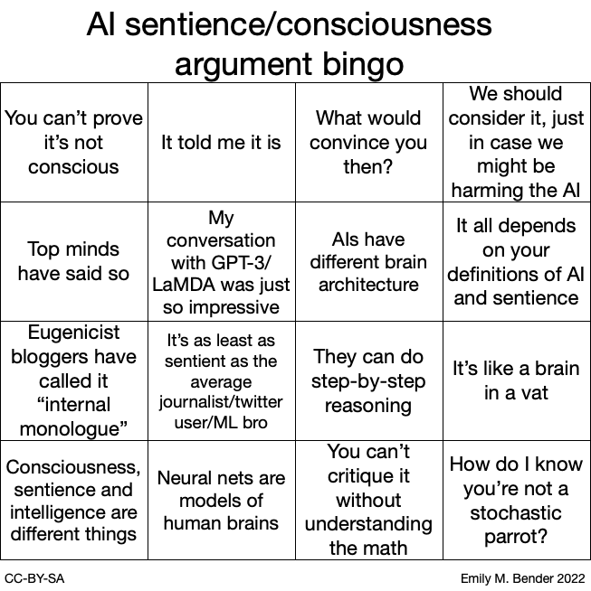
RT @choldgraf: Open source communities need more of this y'all! Made my day.
Don't ever, ever hesitate to show your appreciation for the m…
🎵 Primero conquistaremos Manhattan, después conquistaremos Berlín 🎵

Replying to @NKondjashili
Right?? Super cool street art here
RT @chris77ve: PyQt + ... Satellite stuff.
#python #pyqt #development #app #desktop #satellite #map #earth #groundtrack #leo #lowearthorbi…
Replying to @chris77ve and @poliastro_py
¡Qué bien pinta esto! ¿Estás teniendo en cuenta el J2 para la propagación?
RT @ana_valdi: 🤖 Debates about dudes playing with AI and its anthropomorphisation only distract us from what is really at stake: the climat…
RT @orchestofficial: This week almost all the members of the team are enjoying a company outing to give ourselves a treat after months of h…
¡El 30 de junio estaré en @PythonGirona hablando sobre dataframes más allá de #pandas! Muchas gracias a @Geeks_CAT por la invitación (en especial a @gnuites) y a @python_es por el apoyo siempre. ¿Nos vemos allí?
https://www.meetup.com/PythonGirona/events/286490431
On my way to #PyDataLondon 2022! If you want to talk about data orchestration, know more about @orchestofficial, or just chat, say hi!
Live tweeting of the conference below 👇🏼
Replying to @choldgraf and @pydatalondon
Replying to @choldgraf and @orchestofficial
Yes! Until Sunday. Time for a coffee these days? :D
Replying to @juanluisback
On the shoulders of giants #PyDataLondon
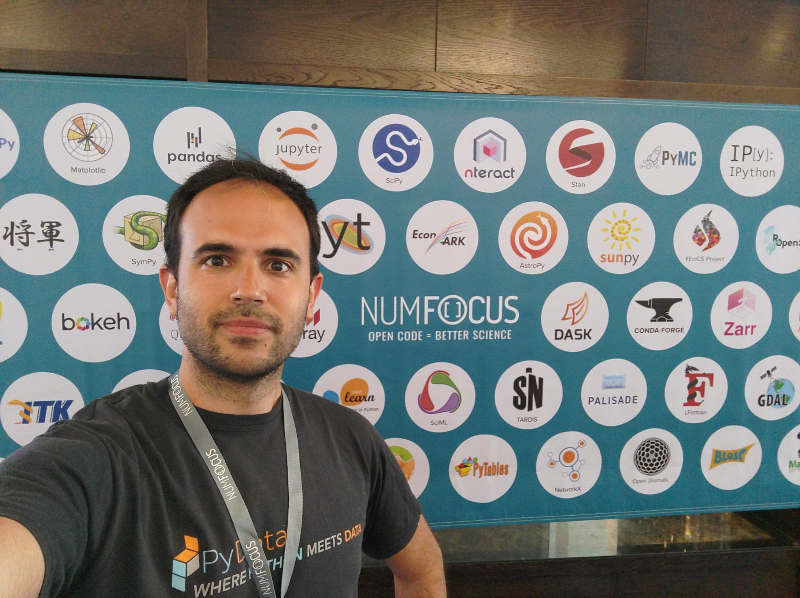
Replying to @juanluisback
Ready for debugging! The SQLAlchemy tutorial starts at #PyDataLondon
Replying to @juanluisback
TIL: You can use dataclasses with SQLAlchemy ORM! https://docs.sqlalchemy.org/en/14/orm/declarative_styles.html#example-one-dataclasses-with-imperative-table #PyDataLondon
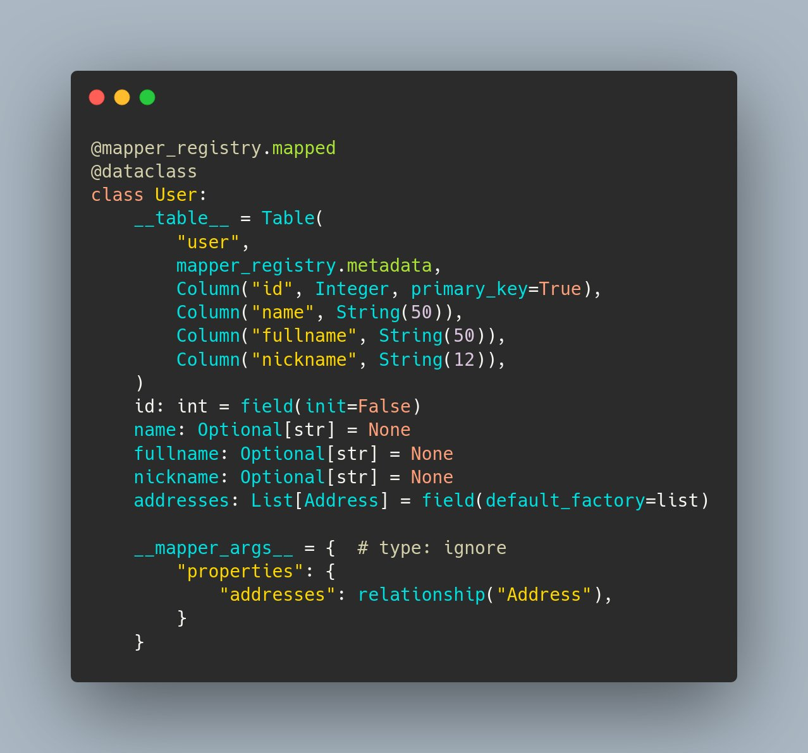
Replying to @juanluisback
Tip for #PyDataLondon workshops: rather than pulling a bunch of Docker images on the stable but rather slow guest wifi, use @gitpod instead! I just did and it worked like a charm ✨
RT @juanluisback: Tip for #PyDataLondon workshops: rather than pulling a bunch of Docker images on the stable but rather slow guest wifi, u…
Replying to @richardpelgrim
DM :D
Replying to @aherranz and @orchestofficial
Good catch! With this heat, I considered bringing a safari hat instead, but truth is that I forgot both 😂
Replying to @juanluisback
Little Ducky is ready to start the @dask_dev tutorial by @richardpelgrim at #PyDataLondon
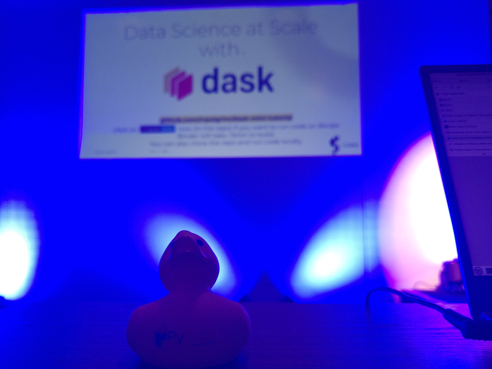
Replying to @juanluisback
The room is packed 🔥 @richardpelgrim on stage! #PyDataLondon
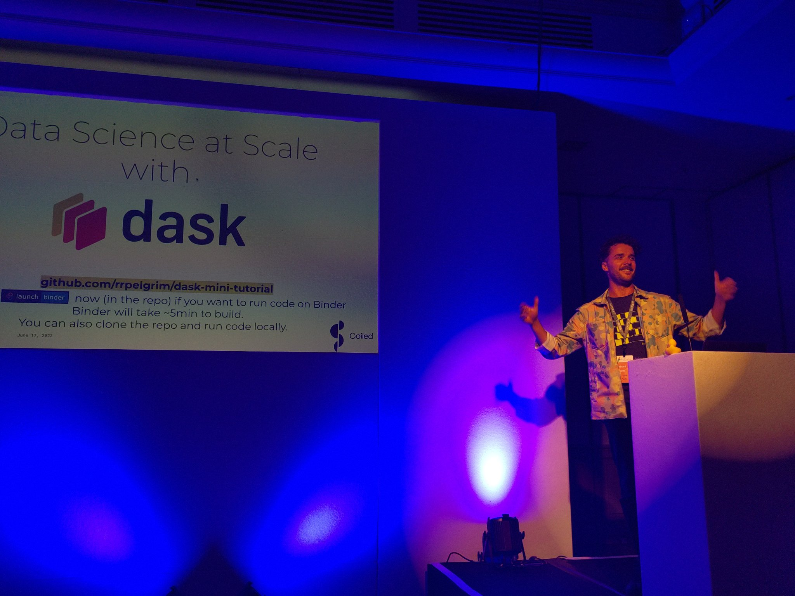
RT @pydatalondon: #PyDataLondon 2022 is off to a flying start with packed out tutorials! Thanks to our team of amazing volunteers for their…
Replying to @juanluisback
And now @njr0 for some Ye Olde Parallelism with mpi4py (by the way, installing with conda seems to work!) #PyDataLondon
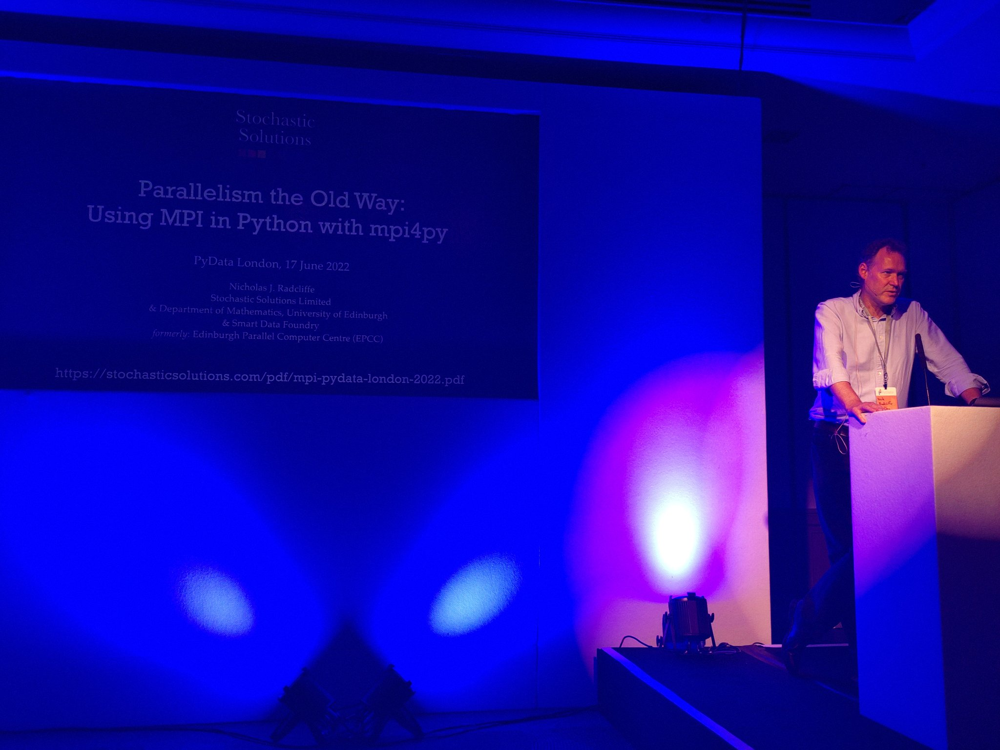
Replying to @macagua, @Odoo, @PythonVE, @aeodoo, @OdooCommunity and @OdooVE
👏🏼👏🏼👏🏼👏🏼
@antroperplejo Han borrado el primer tuit de tu hilo sobre los anuncios de compra-venta de viviendas :(
Replying to @juanluisback
Good morning #PyDataLondon! 🌞 Yesterday I collapsed in bed 😭 But the good news is that my batteries are full 🔋
On to the second day!
Replying to @juanluisback
See you at 11:45 local time @ Tower Suite 2 for my talk "Beyond pandas: The great Python dataframe showdown" https://london2022.pydata.org/cfp/talk/Z3NXF9/
#PyDataLondon
Replying to @juanluisback
So thrilled to see the progress of the @pydatalondon community ❤️ I attended the 2014 first event at Level 39 and gave a lightning talk on ipywidgets, which were quite unknown at the time! #PyDataLondon
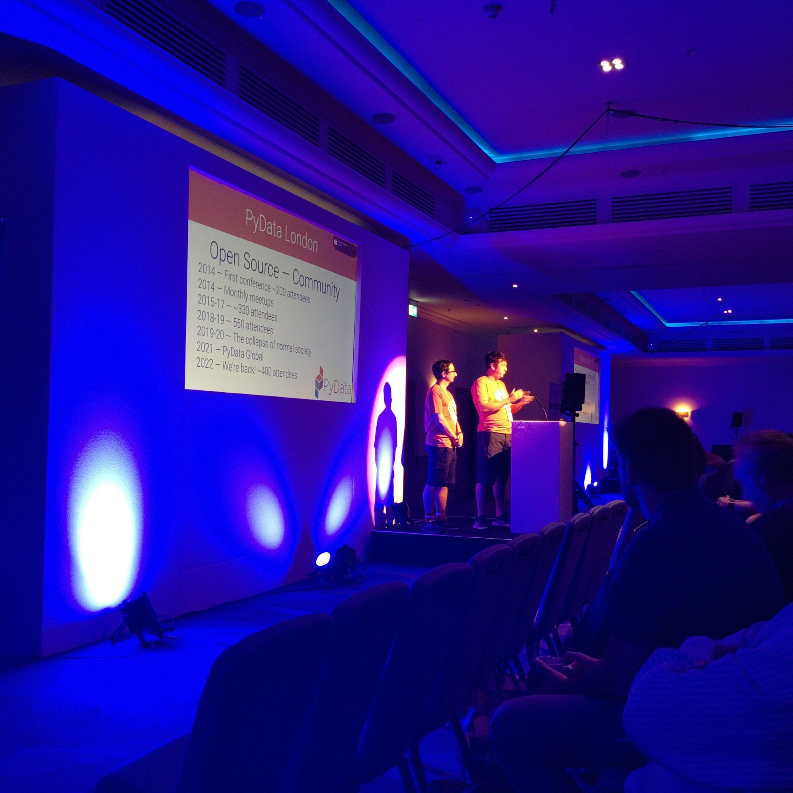
Replying to @pydatalondon
First keynote of the conference: @SylvainCorlay on "possible futures for Jupyter" #PyDataLondon
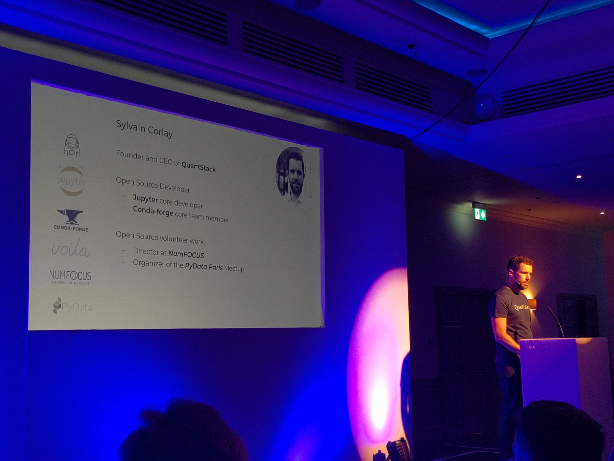
Replying to @pydatalondon and @SylvainCorlay
The @projectjupyter ecosystem is on fire! Jupyter Book, JupyterHub, Binder, voilà, Jupyter Games (!) #PyDataLondon
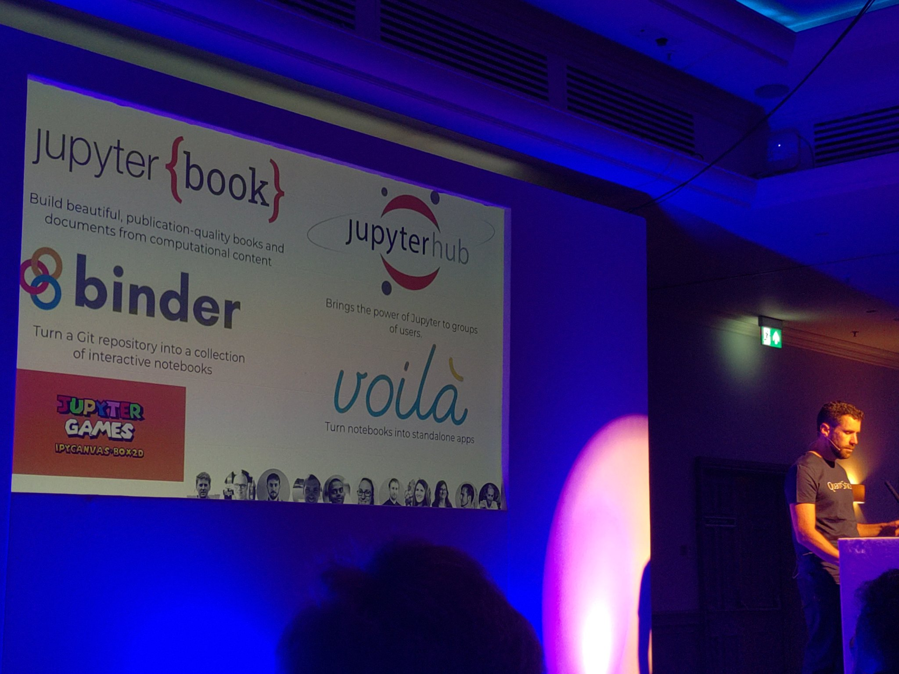
Replying to @juanluisback
Jupyter in the future 💡
1⃣ Cheap, sovereign deployments thanks to JupyterLite
2⃣ Reproducibility thanks to WASM binaries and emscripten-forge
3⃣ Executable documents for everything
4⃣ Accessibility for everyone
5⃣ Technical foundation for complex applications
#PyDataLondon
RT @juanluisback: Jupyter in the future 💡
1⃣ Cheap, sovereign deployments thanks to JupyterLite
2⃣ Reproducibility thanks to WASM binaries…
Replying to @juanluisback
And now @TambeAchere talking about how @pyodide is being used to improve the life of children in care #PyDataLondon
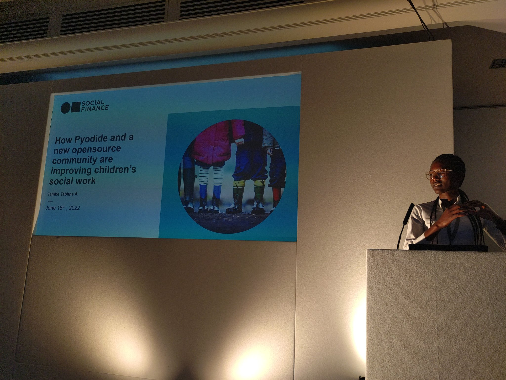
Replying to @TambeAchere and @pyodide
The tool saved 130 days a year per local authority 🤯 @socfinuk #PyDataLondon
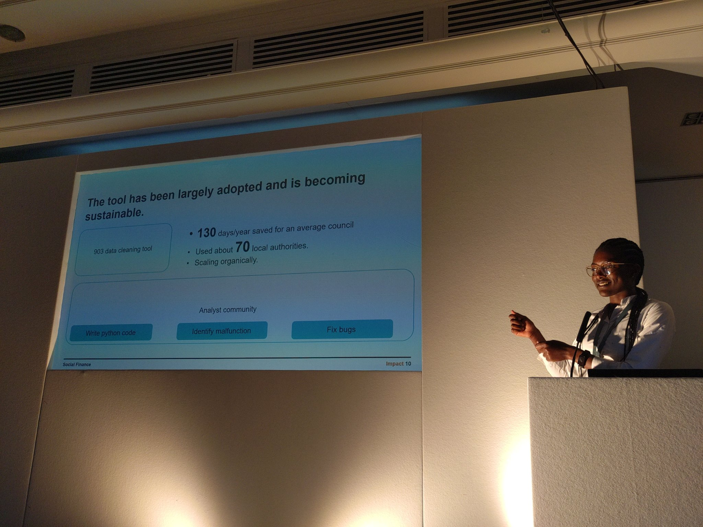
RT @richardpelgrim: @juanluisback launching the Great Python Dataframe Showdown ⚒️
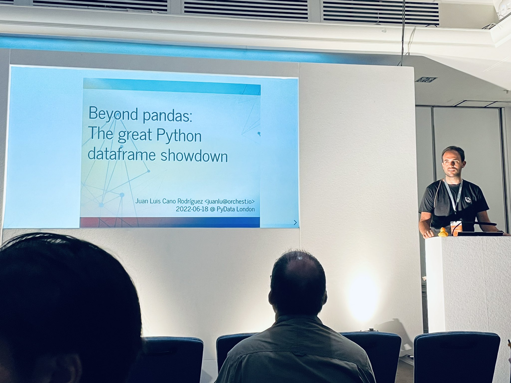
RT @richardpelgrim: For folks who couldn’t make it to @pydatalondon, I highly recommend checking out @juanluisback’s blog series: https://t…
RT @JayAlammar: Beyond pandas: The great Python dataframe showdown, with @juanluisback
Going over possible alternatives to pandas.
#PyDat…
RT @richardpelgrim: and this deep-dive into the trade-offs between various @pandas_dev alternatives by Kevin Kho and Han Wang is also very…
Replying to @TambeAchere, @pyodide and @socfinuk
😁 https://twitter.com/richardpelgrim/status/1538111318368169984
Replying to @juanluisback
And now I'll see if I can squeeze a pull request to @ProjectJupyter at the sprint 👀 #PyDataLondon
RT @hendorf: 🎉🎉🎉 PyData London is back in 3D
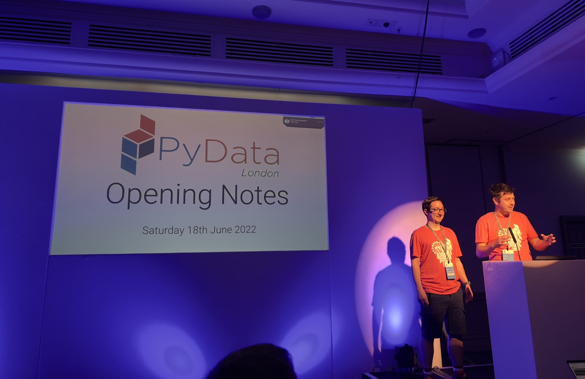
RT @TambeAchere: Guess who gave a talk at @pydatalondon conference today?
This girl !
https://london2022.pydata.org/cfp/talk/K8XZDR/
#PyDataLondon
Replying to @TambeAchere and @pydatalondon
Super inspiring talk, thanks for sharing 🙌🏼 I hope I can some day devote a significant chunk of my time to help social causes with technology
Replying to @juanluisback
Did not have enough time, but at least I investigated one issue a bit https://github.com/jupyterlab/jupyterlab/issues/12705#issuecomment-1159473685
First time debugging real-world TypeScript code, that was fun! (Of course, I used `console.log` for everything 😜) #PyDataLondon
RT @AstroAdamH: I didn’t manage to get all the way through to a solution but hope I can submit a PR after the conference
Replying to @juanluisback
Now enjoying my favorite part of the conference: lightning talks! I'll be on stage again very soon 😈 #PyDataLondon
Replying to @juanluisback
🐼 https://twitter.com/AstroAdamH/status/1538186338230538240
Replying to @unalberil
Glad you liked it! Spread the word, no more fake @pandas_dev logos 😄🐼
RT @AstroAdamH: @juanluisback giving a lightning talk about everyone's favourite python package and how "this is not the pandas logo". #pyd…
RT @pydatalondon: Thank you to @juanluisback for bringing this incredibly important issue to our attention at #PyDataLondon 2022.
Replying to @pydatalondon
😂
Replying to @juanluisback
On to the last day of #PyDataLondon with @ixek: challenges of the PyData ecosystem

Replying to @ixek
After the break we continue with "A hitchhiker's guide to MLOps" at #PyDataLondon
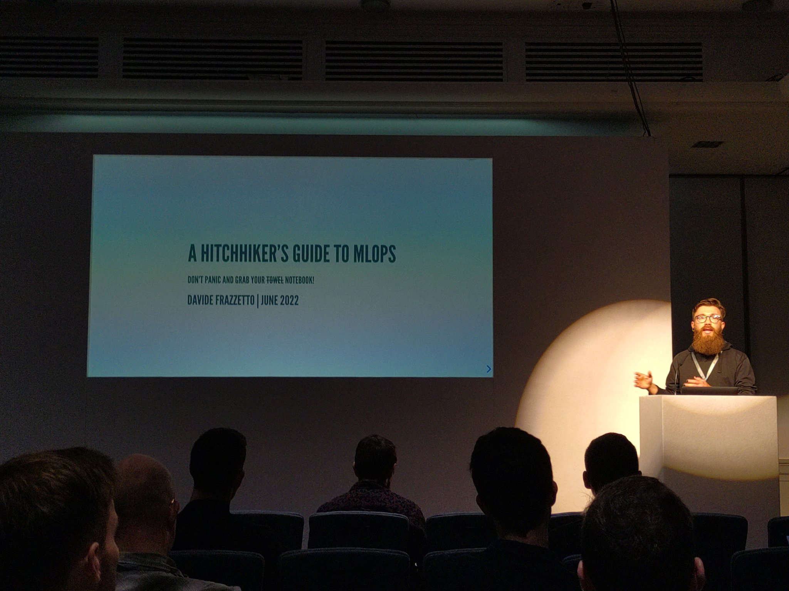
Replying to @ixek
I love notebooks too 😍 Looking forward to knowing more about notebooker at #PyDataLondon
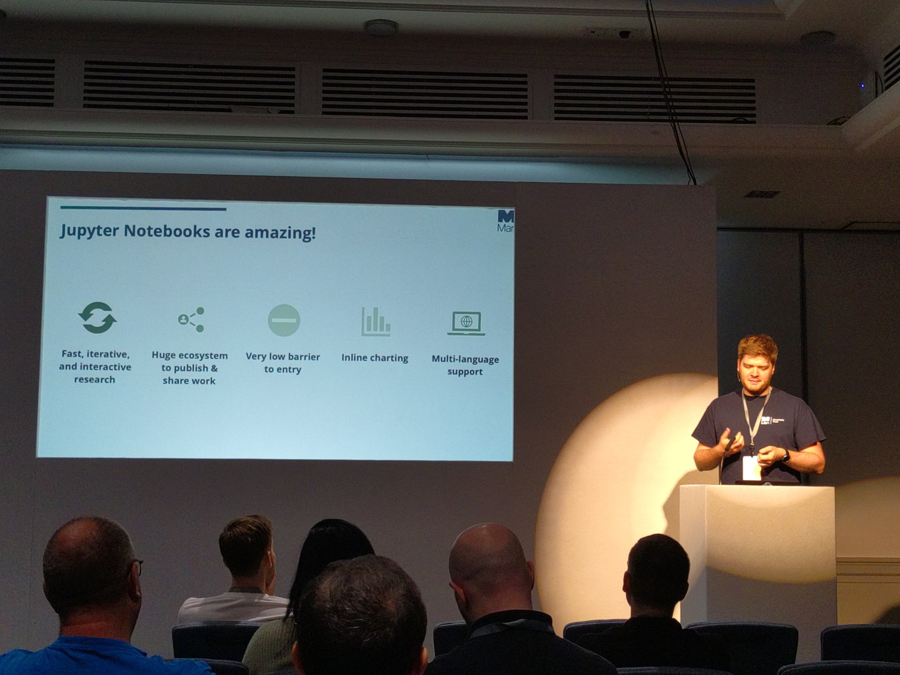
Replying to @juanluisback
Did I hear Julia? 👂 #PyDataLondon
Replying to @juanluisback
18th century Prussian generals knew it already: ML is a continuation of SWE 😜 #PyDataLondon
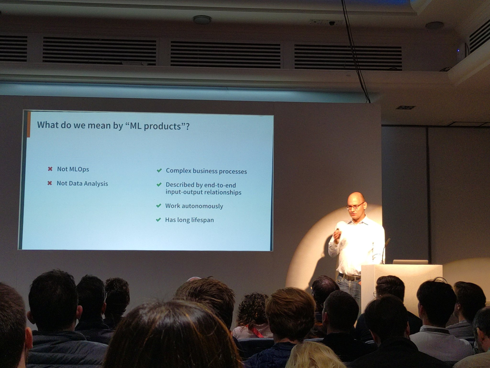
Replying to @juanluisback
Don't confuse technical debt vs technical mess! #PyDataLondon
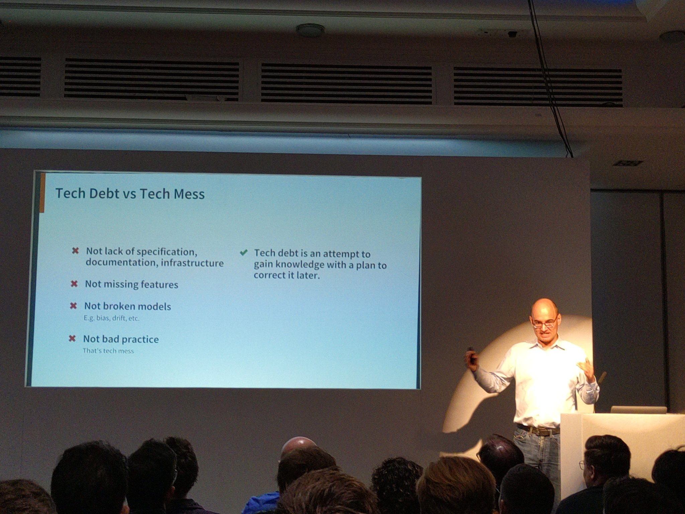
RT @AstroAdamH: Hanna van der Vlis is about to present a practical example of hierarchical Bayesian modeling with @pymc_labs in the agri-te…
Replying to @juanluisback
TIL: https://drivendata.github.io/cookiecutter-data-science/ #PyDataLondon
RT @choldgraf: Anybody in London for @pydatalondon heading to Paris this evening? I am trying to get a key to Paris ASAP !
Replying to @juanluisback
Got my @anacondainc bag full of stickerssssss 😀 #PyDataLondon
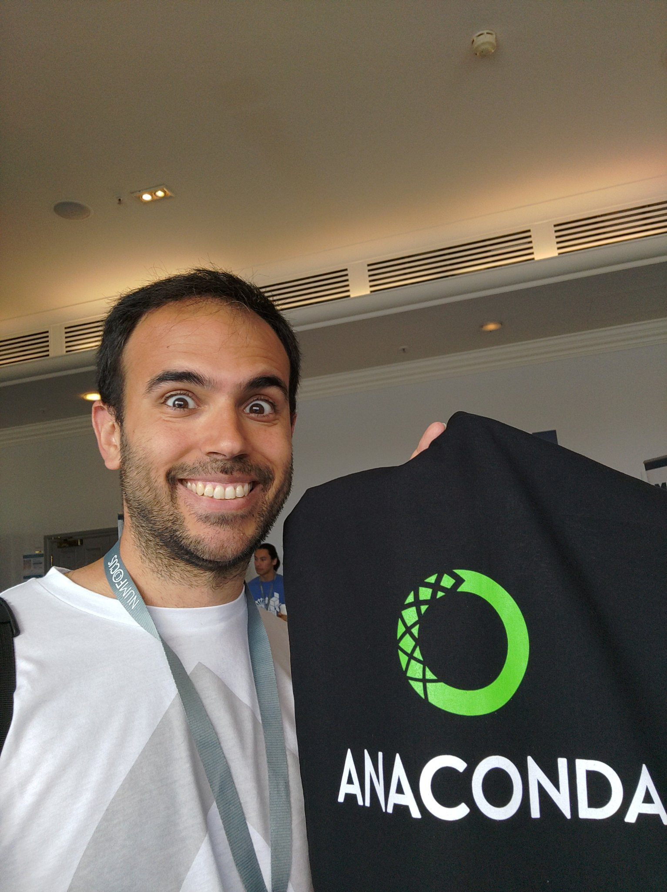
Replying to @anacondainc
Already seeing some goodbye hugs, this is coming to an end 🥺 But fear not! There might be more surprises in the lightning talks... #PyDataLondon
Replying to @GloriaMacia_
presenting @DataUmbrella and speaking about invisible diversity ❤️ #PyDataLondon
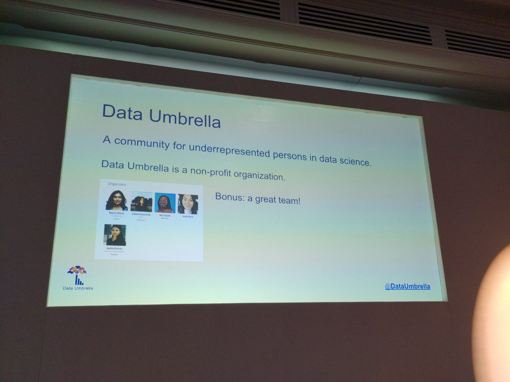
RT @GloriaMacia_: Which is the best course to learn Dask? I am looking for the best “zero to hero” free or paid tutorials on this powerful…
Replying to @GloriaMacia_ and @DataUmbrella
Script of my talk "untitled2" at #PyDataLondon is online 🎶 https://github.com/astrojuanlu/music/blob/main/untitled2_pydata-london-2022.py
Replying to @juanluisback
🎵 https://twitter.com/pydatalondon/status/1538559945418977283
Replying to @juanluisback
That's a wrap! Thank you #PyDataLondon, it's been wonderful as usual! See you next time
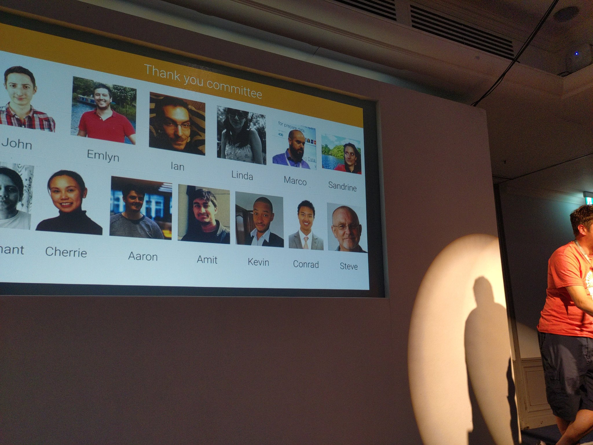
RT @juanluisback: That's a wrap! Thank you #PyDataLondon, it's been wonderful as usual! See you next time
Replying to @alhuelamo
It's @FoxDotCode !
RT @miguelmalvarez: This was one of the most entertaining lighting talks ever in @pydatalondon awesomely executed by @juanluisback https://…
RT @laffra: Bye @pydatalondon. It was a blast!

Replying to @ahmetmeleq
Of course! I used @FoxDotCode and the talk is online too 🎵 https://mobile.twitter.com/juanluisback/status/1538560132598181888
RT @ahmetmeleq: Here's the to-be-notorious DJ.py- performance!
@juanluisback, I was really hoping this library to turn out to be open sour…
Hello new followers! 👋🏼 If you want to know more about
🐍 All things @PyData & SciPy
🖥️ Data pipelines with @orchestofficial
🧑🤝🧑 @PyDataMadrid
🤝 A bit of future of work, sustainability, cooperatives
🎶 A bit of algorithmic music
You're at the right place! Please say hi 😊
RT @eumetsat: Join our Jupyter Notebook competition and help others work with #Copernicus data https://notebook.wekeo.eu/ The best notebooks w…
RT @AstroAdamH: 👋🏼 Hello to everyone who is following after an amazing @pydatalondon 2022 conference.
You’re in the right place to hear ab…
One of the hot topics of #PyDataLondon was that "Python packaging is still a mess" (many talks about conda, mamba, pip, etc)
I'm thinking of writing a blog post (or series) titled "Python packaging is much better than you think" unbundling these struggles.
Would you read it?
Replying to @iggy_knights
Thanks for chiming in @iggy_knights! (nice pun on the Twitter handle btw) What frustrates you the most about it? Do you have any recent bad experiences with it?
Replying to @tj_astro
I see, that's quite typical! I usually have the policy of not upgrading the Python version because of past experiences like yours (just recreate the environment). On the other hand, mamba is much faster and should be able to handle it I think.
Replying to @iggy_knights
This is very helpful! I think many others can relate to these issues. I'll keep them in mind if I end up writing anything.
Replying to @iggy_knights
Yep, they're incompatible I'd say. One can use pip inside conda envs though (not the other way around).
Replying to @tj_astro
Hah, what a mess. Yes, this is one of the existing warts, wondering if it will become any better
Replying to @garrrikkotua
How are you currently dealing with it? conda, pyenv, other?
Replying to @rs_datascience
For the record, editable installations are now PEP 660! flit supports them and so does Poetry (added just four weeks ago)
Replying to @MArbaiza84
Looking at the responses, there's material for a whole book! The challenge will be to compress that information in a digestible form that can be both helpful and insightful.
Replying to @elliewix
Spot on! This is by far the most common struggle for the majority of the users, and it has to do with how (IMHO) there's no canonical advice on how to bootstrap Python for development.
Replying to @moshezadka
That's *exactly* the first problem we need to discuss ;)
RT @moshezadka: @juanluisback I think the problem is that "Python packaging" is a not a good category, and maybe a better blog post would b…
RT @juanluisback: One of the hot topics of #PyDataLondon was that "Python packaging is still a mess" (many talks about conda, mamba, pip, e…
Replying to @kwinkunks
Quick answers:
- They're not broken, you need to `pip install -e .`
- Yes! PEP 621 and 660 are widespread
- I think there are even better options in the ecosystem these days (pdm, Hatch)
- Many people happen to care about non-Python code, which makes this conversation harder :)
RT @rasbt: When people say JAX vs PyTorch, do they really mean "JAX+Flax vs PyTorch"?
Otherwise, I think we should be comparing "JAX vs tor…
Replying to @HEPfeickert and @kwinkunks
Argh, I've been bitten by that import mismatch when running doctests in the past too, but now I can't find the relevant issues. Thanks for pointing them out!
Replying to @choldgraf
Spot on. I think there's an appetite for both, the challenge is to cater to all these different audiences and problems. Sort of like https://diataxis.fr/ but for blog posts 😁
Replying to @garrrikkotua
Yep, they're designed for different use cases. I use pipx for things like docker-compose, black, and the like, to have them in a central location.
conda for different Python versions works quite nice for me. I don't try to upgrade the Python version tho https://twitter.com/tj_astro/status/1539004071025291265
Replying to @pradyunsg
Indeed, there's so much to cover. Here's a brain dump I did yesterday in 15 minutes https://gist.github.com/astrojuanlu/9a7419d3281d4689ae05df613e0bf9c0 before I even started getting replies to this tweet...!
Replying to @braaannigan
Mandatory reference 🤪
(Now seriously, I don't think using Docker helps building a better understanding, although it certainly helps with isolation. In addition, not all editors or workflows are Docker-friendly. And finally, mounting files on Docker leads to permission issues)

Replying to @John_Sandall
Thanks a lot John, glad you appreciated it 🙏🏼 All the merit goes to the organizing team, you all did a fantastic job! Looking forward to meeting you again soon
Replying to @thinknuts
I am not a user myself, but I agree "all-in-one" tools such as Poetry, PDM, and Hatch are well worth discussing. When they consolidate a bit more maybe I'll make the switch, but if I had to choose today, I'd go for PDM https://twitter.com/juanluisback/status/1494084401063411721
RT @HenrySchreiner3: @juanluisback @kwinkunks http://packaging.python.org’s tutorial is now PEP 621 based as of this morning. :D
Replying to @HenrySchreiner3 and @kwinkunks
Finally! 🎉
Replying to @thinknuts
I'd also love to see PEP 582 accepted, but human factors are holding it back https://twitter.com/juanluisback/status/1494216842193342465
Replying to @GalaCF
I think you are inferring too many things about me or my intentions from cherry-picking a sentence. I'm a random Internet stranger that makes mistakes but I have feelings too, you can make your point with kindness and assuming good intentions. I will not engage any further.
Replying to @gerardjgorman
Both things can be true at the same time :)
Replying to @ch_sager
I'll give your post a read, thanks a lot!
RT @chadwhitacre_: “open source projects should fund their own dependencies”
Yaaassssssssss! 👏 When I buy a cup of coffee I give my money…
Replying to @yabellini and @rOpenSci
¡Enhorabuena! 😁👏🏼
Replying to @juanluisback
Well well, I didn't expect so much engagement and insightful responses to this tweet. Thank you all! Whenever I get to write these blog posts I'll surely take into account all the resources you sent me 😁
My earlier tweet about #Python packaging made numbers, and one tool was mentioned more than others: Poetry.
I don't have much experience with it, so could you tell me what you love about Poetry, or what problems it solves for you? 👀 https://twitter.com/juanluisback/status/1538936104824492033
Replying to @alhuelamo
So, lock files + all-in-one management would be your highlights?
Replying to @garrrikkotua and @GatsbyJS
For me it was @railway (product) and Polars by @RitchieVink (library)
Replying to @pf_moore, @pradyunsg and @zooba
I can relate, I'm not 100 % happy with some of its choices and that's why I don't recommend it more widely either. More context: https://twitter.com/SDisPater/status/1521932863389712385
Replying to @joaodemeirelles
Some folks say that npm, Cargo, and Pkg.jl are awesome. But I haven't checked in depth (I have 10+ years of experience with Python, just doing one successful `npm install` command won't easily convince me that everything is perfect).
However: https://twitter.com/juanluisback/status/1471817871324061697
RT @PyDataMadrid: Por si no teníais suficiente Python en Madrid, ¡vuelve @python_madrid esta tarde! 👏🏼👏🏼👏🏼
(Pero si solo puedes ir a 1 mee…
Replying to @lolafarinas
Voy yendo y viniendo 🙃 ¡te escribo por privado!
RT @marcwouts: We have just released the version 1.0.0 of ITables: Pandas DataFrames as interactive HTML tables in Jupyter Notebooks. The l…
Let's normalize paying money for useful stuff. It also paves the way for contenders that want to disrupt Big Tech. We work in tech, we can afford it.
https://twitter.com/NateTheFinch/status/1539384375137255425
Replying to @goanpeca
I'll reach out in a few days when I have some more time! :D
Replying to @lolafarinas and @PyDataMadrid
Tienes un mensaje en LinkedIn 😊
Replying to @databeers, @PyDataMadrid, @lolafarinas and @GoogleStartupES
I don't want to carry water for megacorps, but it's worth remembering this insightful piece by @Senficon on why
GitHub Copilot is not infringing your copyright, and therefore they probably don't owe you money for the code they used to train their models
https://felixreda.eu/2021/07/github-copilot-is-not-infringing-your-copyright/
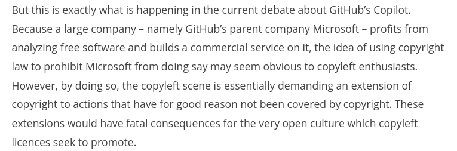
Replying to @penelope_zone and @github
Worth examining this take https://mobile.twitter.com/juanluisback/status/1539838512752693248
Replying to @aaronbassett
Do they though? https://mobile.twitter.com/juanluisback/status/1539838512752693248
Replying to @redondofelix, @python_madrid, @PyConES and @paradigmate
¿Hay alguna foto del evento? ¿Qué tal fue? 😊
Replying to @aherranz and @mpvdes
👏👏👏
Replying to @aaronbassett
"Normalize paying money for useful stuff" doesn't mean "add an invisible clause to existing open-source licenses that requires folks to pay for gratis software"
Copilot is not open-source software, it's a service. They're both useful, but different.
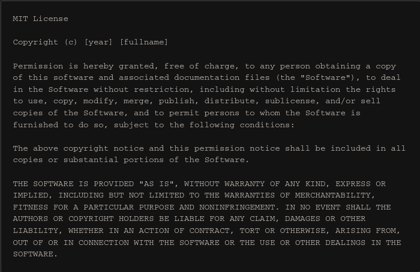
Replying to @aaronbassett
🤷🏼 This is very similar to "person publishes open-source app and a 'donate with PayPal' button, many people and corps use it without donating, person gets angry" argument.
As explained in the article I shared, text mining is not copyright infringement. We signed up for this.
Replying to @aaronbassett
"I have a truly marvelous solution to surveillance capitalism, neoliberalism, unchecked megacorps, and the tragedy of the commons which this tweet is too narrow to contain"
Replying to @jezdez and @Senficon
IANAL so I don't know, and I'm not sure we'd want to take this to a court to be honest. Google v Oracle was scary enough.
Replying to @jezdez and @Senficon
Folks seem to be upset by Copilot's parent company being a megacorporation + charging for something that was previously gratis.
But then folks go 😍🌈 when $megacorp releases tiny UI improvement.
Maybe folks should take a bolder stance and not support megacorps instead?
Replying to @jezdez and @Senficon
By the way, for an example of this see https://twitter.com/ChrisGr93091552/status/1539731632931803137
Replying to @choldgraf, @jezdez and @Senficon
This. And without addressing it with an holistic perspective, we're just scratching the surface.
RT @choldgraf: @jezdez @juanluisback @Senficon which all comes back to:
the root problem is not the specific decisions that large companie…
Replying to @niconoe
This looks amazing! Do you have any pointers to what was used for the hex grid? Is it an open source library?
Replying to @niconoe
Did not know this was possible, thanks!
Replying to @PamphileRoy and @niconoe
This one I knew! Too bad I haven't had the chance to use it in any real world project yet 😄
RT @choldgraf: I am super excited about the latest improvements coming in the PyData Sphinx Theme! Search-bar pop-ups w/ keyboard shortcuts…
RT @mmngreco: @pytestdotorg @brianokken @juanluisback I found it ＼(＾O＾)／ this is a real game changer! I can't believe I didn't know this ye…
Replying to @mmngreco, @pytestdotorg and @brianokken
Nice find!
RT @PyDataMadrid: ¡Todo listo para nuestra reunión de hoy en @triple_ferraz! Nos vemos en media hora 😍
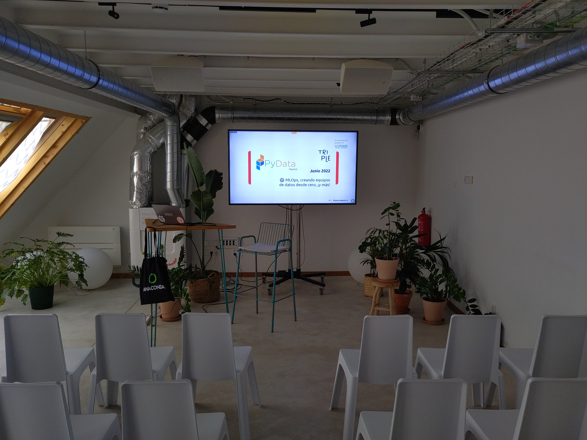
Replying to @zzznavarrete and @poliastro_py
¡Hola Nicolás, muchas gracias por tus comentarios! Yo creo que lo mejor es ir entendiendo un poco el concepto de qué es una órbita, qué parámetros intervienen y demás. Recomiendo nuestro chat http://chat.poliastro.space tenemos un canal en español también. ¡Te esperamos!
¡Arranca @PyDataMadrid! Con @MartaRiveraAlba hablando sobre #MLOps
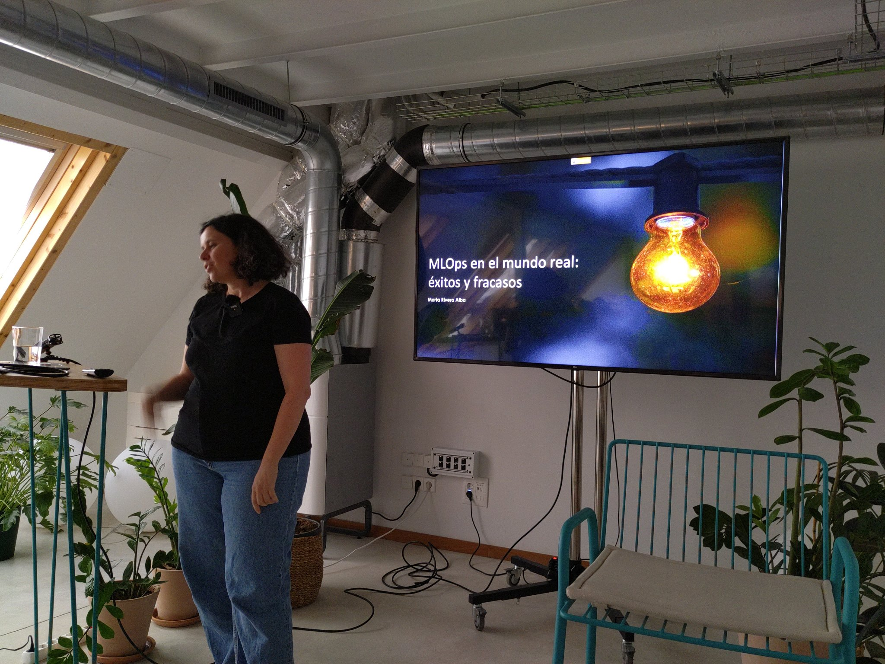
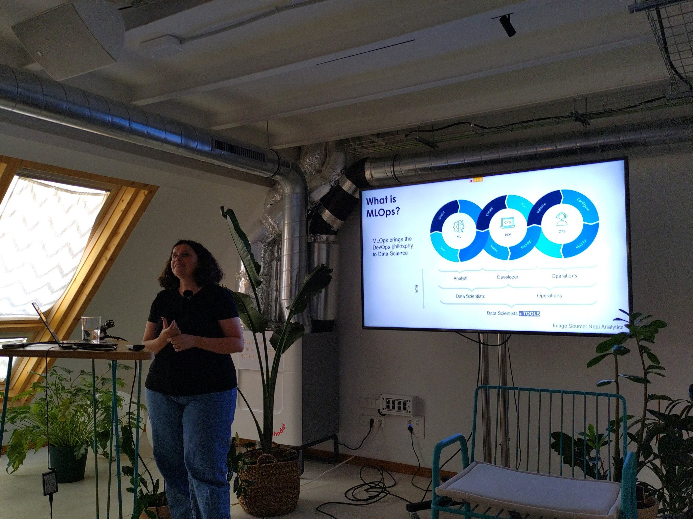
Replying to @juanluisback
Y ahora @ramiroaznar hablando de cómo montar un equipo de datos desde cero en @PyDataMadrid

Replying to @getdbt
, @tinybirdco ... @ramiroaznar está mostrando muchas herramientas chulas @PyDataMadrid
RT @jreback: I am giving a talk about #pandas on 6/29. I am going to talk about the state of #pandas and how the project is at a cross road…
RT @valerybriz: Después de más de 2 años hoy asistí al primer meetup presencial post pandemia 😮😁
Se siente bien estar de vuelta! Y aún más…
Replying to @valerybriz and @PyDataMad
😁😁 ¡Un gusto volver a coincidir @valerybriz! Nos volvemos a ver pronto 💪🏼
RT @PyDataMadrid: ¡Muchas gracias a quienes vinisteis a nuestra reunión de junio! 😍 Y en especial a @triple_ferraz por brindarnos su espaci…
Christoph Gohlke has been distributing Windows Binaries for "tricky" Python libraries since at least 2010.
conda was created in 2012, and the first Windows wheels for SciPy were uploaded in 2017.
Without Christoph's work, I doubt Python would have the popularity it has today. https://twitter.com/hugovk/status/1537077698157215752
Episodio 38 🐍⚙️ on Noticiero Python Científico https://astrojuanlu.substack.com/p/episodio-38?utm_source=twitter&utm_campaign=auto_share&s=w
RT @numpy_team: NumPy 1.23.0 is released 🎉
Highlights include: a much faster `loadtxt`, DLPack now exposed in the Python API, improvements…
Replying to @pleiszenburg
Atom was always among the worst in terms of latency apparently, although I have never used it https://pavelfatin.com/typing-with-pleasure/
RT @ocefpaf: @juanluisback Many conda-forge Windows packages were built on top of his work.
Replying to @ir_hafidz
Not all of us, but definitely you're not alone 😅
(curious: which package? pip or conda? assuming Windows)
Replying to @spiralbtc and @COSS_Community
cc @Grammarly 😋
RT @Gaia_Ciencia: 1/3 Hey espaciotrastornados, esto os interesa:
El 11 y 12 de julio participo en el curso de verano sobre #ÉticaEspacial…
Replying to @ir_hafidz
Definitely you're not alone :) https://github.com/allenai/scispacy/issues?q=is%3Aissue+windows+nmslib+is%3Aclosed+
I'd be happy to help but Twitter is not the place for it 😅 better to open an issue on GitHub (for scispacy or nmslib). If you do so, feel free to ping me (http://github.com/astrojuanlu)
Best luck!
RT @orchestofficial: Speed is everything. We just reduced the time it takes to connect to an instance from 6 seconds down to just 1! 🤯
Che…
Replying to @SoyGema
cos2(x) + sin2(x) = 1
❣️¡Enhorabuena! Que seáis muy felices 😊😊😊
Replying to @cooperlees, @brettsky, @dstufft, @pradyunsg and @di_codes
Congratulations! 👏🏼 Do you think this paves the way for https://github.com/pypa/warehouse/pull/9972 ?
RT @TambeAchere: In software development, "perfect" is a verb not an adjective.
There is not perfect process, design or story.
You can, how…
I managed to successfully replace branches of these monopolies for personal use: @heyhey for mail, @ecosia for search, @firefox for browsing (desktop & mobile), @MurenaCom & @e_mydata for smartphones. These migrations were mostly painless.
I'm still stuck with others though: 🧵 https://twitter.com/GergelyOrosz/status/1540742970306985985
Replying to @juanluisback
2⃣ Google Maps: Now juggling @OrganicMapsApp + @Citymapper + @waze. @OrganicMapsApp is still a big lacking & buggy: many UX issues, navigation a bit choppy https://github.com/organicmaps/organicmaps/issues/1060. @openstreetmap data is awesome but I miss the restaurant reviews available on GMaps.
Replying to @juanluisback
1⃣ Google Calendar: neither @Nextclouders nor GNOME Calendar correctly handle notifications! https://github.com/nextcloud/calendar/issues/3000, https://gitlab.gnome.org/GNOME/gnome-calendar/-/issues/498. GCal famously does not support CalDav authentication https://support.google.com/calendar/thread/55961951/can-i-subscribe-a-caldav-calender?hl=en, which makes migration really difficult.
Replying to @juanluisback
3⃣ GitHub: I could migrate my projects over to @codeberg_org or @gitlab at any time, but I foresee friction for new contributors, lack of cross-references with dependencies already on GH, and in general less visibility of my open source work. Network effects all the way down.
Replying to @juanluisback
I believe the solution we need to address these pain points is to have more successful Commercial Open Source companies. But (1) they have to offer an excellent UX/DX and (2) we need to embrace paying money for useful services https://twitter.com/juanluisback/status/1539624298331066368
Replying to @rdbisme, @OrganicMapsApp, @Citymapper, @waze and @openstreetmap
Yep...
Replying to @alhuelamo
I haven't used Protonmail, but I find Hey's concept and UI amazing. Their privacy policy is OK https://www.hey.com/policies/privacy/
Replying to @esp_py, @OrganicMapsApp, @Citymapper, @waze, @openstreetmap and @ecosia
The search results are good, much better than DuckDuckGo for instance (at least subjectively). Only occasionally I go to Google to search the same thing "just in case" (for pictures and news items mainly).
Replying to @cahdoria_
It's hard :( have you actually found any responsible AI companies? Responsible AI roles just sounds super hard right now
RT @garrrikkotua: Is there some hacky way to track clicks and other events on a @github repo page?
I really, really want it.
GitHub Actio…
RT @reydelhumo: Sphinx 6.x is removing jQuery dependency. How do you think extensions and themes that depend on jQuery should include it in…
Replying to @tale_andrea, @heyhey, @ecosia, @firefox, @MurenaCom and @e_mydata
Depends. For storage, so far I'm using Nextcloud instances provided by Disroot and @e_mydata and they're working fine. For collaborative document editing, maybe OnlyOffice or Collabora are good options, I have no idea.
Replying to @r_vaquerizo
Nop
Replying to @EcoLaurenY
Let me guess - using conda-forge? 😅
Replying to @EcoLaurenY
Yep, mamba has this bootstrapping problem: it can't easily be installed in an existing conda environment because, well, conda is slow 😓
If your version is modern enough, you can try the new `--experimental-solver=libmamba`: https://www.anaconda.com/blog/a-faster-conda-for-a-growing-community
Replying to @EcoLaurenY
I just tried in a Docker container and you're right: "LibMambaSolver is not allowed on the base environment" and "Installing mamba into any other environment than base can cause unexpected behavior".
Guess the only alternatives are miniforge, mambaforge, or micromamba cc @jezdez
RT @laffra: Check out my latest article: Why I Attended PyData London 2022 https://www.linkedin.com/pulse/why-i-attended-pydata-london-2022-chris-laffra via @LinkedIn
Replying to @richardpelgrim, @dask_dev, @ncclementi and @pavithraes
Congrats!!
Replying to @michaelwaskom
When you mean "packaging infra", you mean creating packaging metadata? If so, flit is the simplest build backend https://flit.pypa.io/en/latest/
Replying to @michaelwaskom
When you *say
(1 typo, 1 song)
https://www.youtube.com/watch?v=heMn_0-KoNE
RT @readthedocs: Today we found the documentation of "disnake" and we think it's pretty awesome! 😍
"disnake is a modern, easy to use, feat…
Okay, this week has been my first time
- Doing serious analytics SQL work ever, for real (I fell in love with CTEs)
- Performing data modeling with @meltanodata and @getdbt
- Create complex questions in @metabase from raw SQL and creating interactive dashboards with filters
💪🏼 https://twitter.com/juanluisback/status/1517549738903719936
RT @thebmbennett: 📣I’m collabing with @TheGenData (and other talented engineers) to give a crash course on data engineering with Parsons, a…
RT @josephjacks_: Open source projects are a direct reflection of their creators’ personalities, belief systems and explicit intentions.
The perils of doing Conference-Driven Development is that the stress levels when the event approaches are high, and sometimes you overshoot. My talk about @poliastro_py at @SciPyConf is two weeks away, I'm nervous as hell 😱
RT @PythonGirona: 📢 Demà a les 19:00 el gran @juanluisback ens parlarà sobre DF més enllà de #Pandas. No t'ho perdis! 🐍
https://t.co/DWLKg…
Replying to @pleiszenburg, @poliastro_py and @SciPyConf
I'll need it 😂
RT @metalikus: Meet and greet `pip-compile --resolver backtracking` on `pip-tools==6.8.0` 🎉
Replying to @spbail
Is there a recording of this?? I have so much FOMO now 😂
Replying to @spbail
That's exactly what I'm doing, OMG 🤣
RT @PythonGirona: Comencem la sessió "DF més enllà de #Pandas" amb el mestre @juanluisback
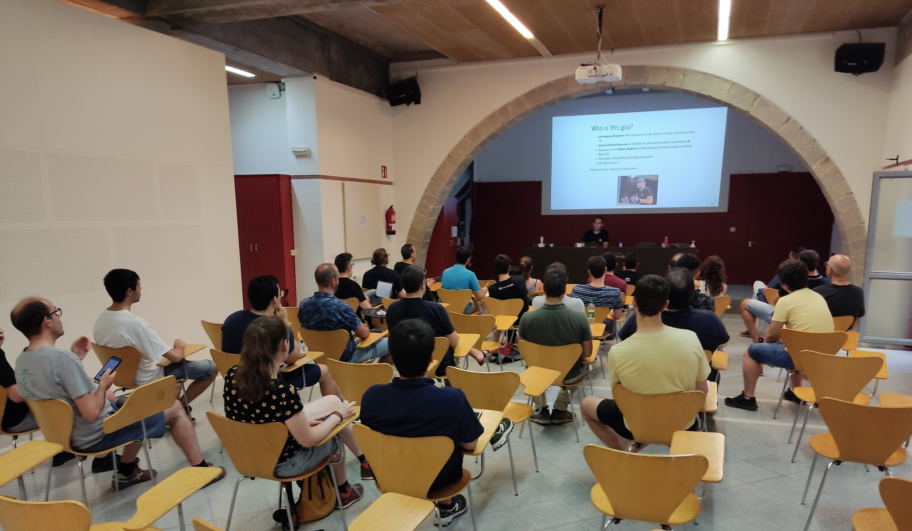
RT @victormartin: @PythonGirona @juanluisback Python Pandas al CC La Meecè
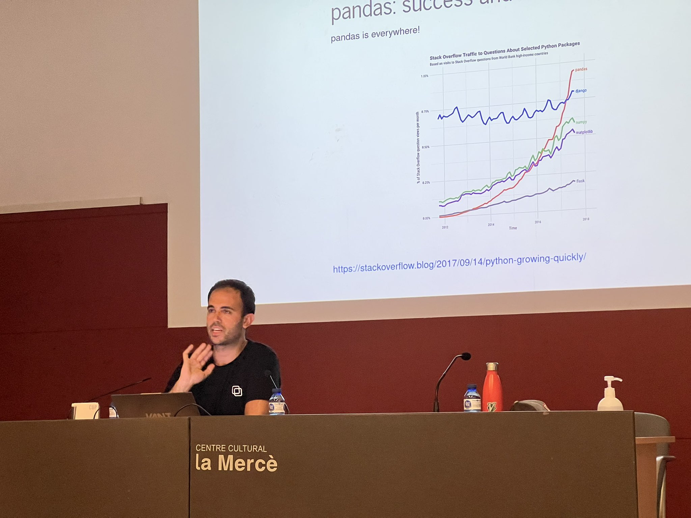
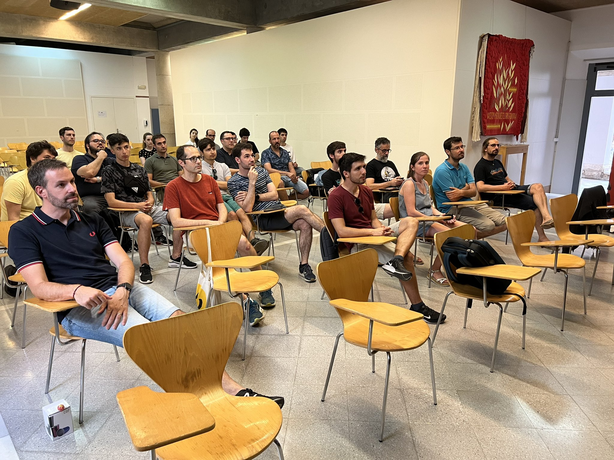